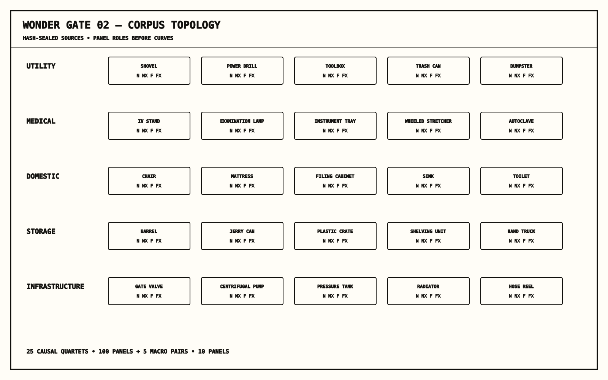
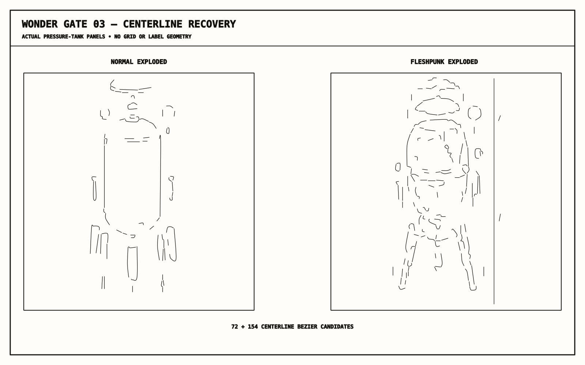
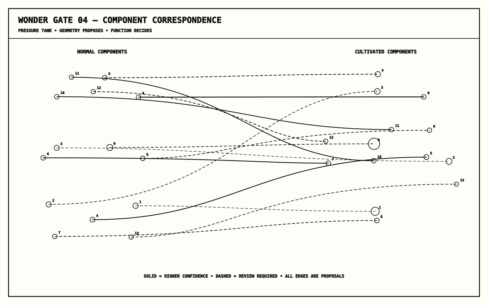
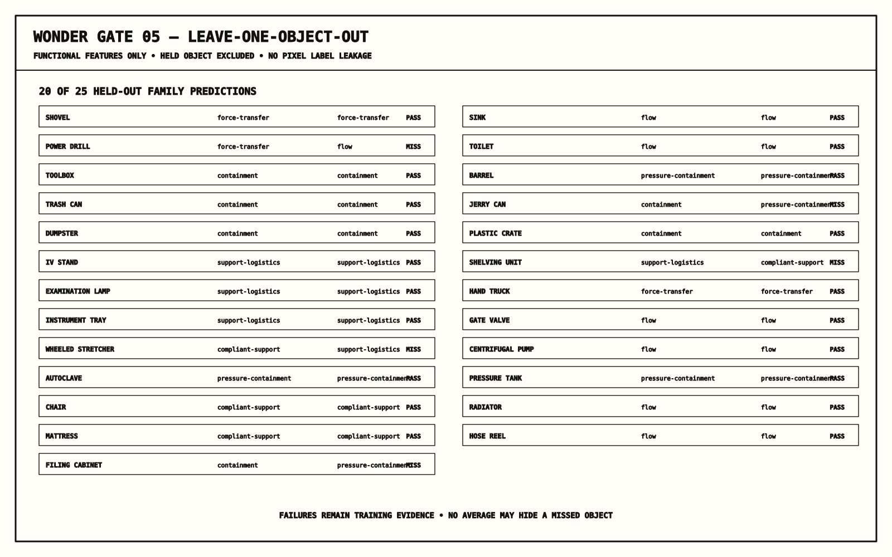

Wonder Apprenticeship
Eleven sources sealed. Twenty-five causal quartets. Machine state: structurally studied, awaiting human.
Gate 02 — Corpus topology

Gate 03 — Centerline recovery

Gate 04 — Correspondence

Gate 05 — Held-out learning

Machine verdict: STRUCTURAL_STUDY_COMPLETE_AWAITING_HUMAN. Weapon mutation labels remain human-owned.